ENGINE UNIT > REASSEMBLY |
| 1. SELECT NO. 2 CYLINDER HEAD GASKET |
Set the 2 crankshaft pulley set bolts to the crankshaft.
Clean the cylinder block with solvent.
Inspect the protrusion for each cylinder.
Set the piston of the cylinder to be measured to slightly before TDC.
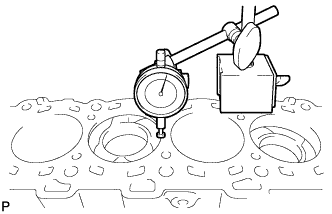 |
Place a dial indicator on the cylinder block, and set the measuring tip as shown in the illustration.
Set the dial indicator at 0 mm (0 in.).
Find where the piston head protrudes most by slowly turning the crankshaft clockwise and counterclockwise.
Measure the piston protrusion value of each cylinder at 2 places as shown in the illustration below, making a total of 8 measurements.
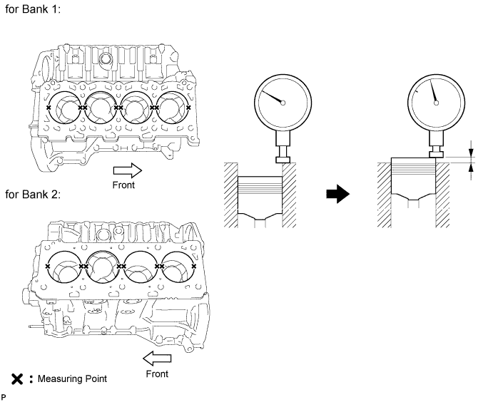
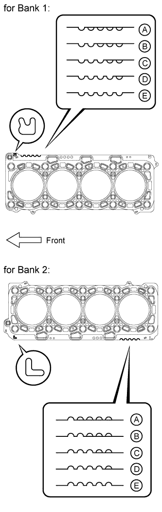 |
Select a new cylinder head gasket.
| Item | Cutout | Specified Condition* |
| A | 1 | 1.20 to 1.30 mm (0.0472 to 0.0512 in.) |
| B | 2 | 1.25 to 1.35 mm (0.0492 to 0.0394 in.) |
| C | 3 | 1.30 to 1.40 mm (0.0512 to 0.0551 in.) |
| D | 4 | 1.35 to 1.45 mm (0.0531 to 0.0571 in.) |
| E | 5 | 1.40 to 1.50 mm (0.0551 to 0.0591 in.) |
Select the largest piston protrusion value from the measurements and then select a new appropriate gasket according to the table below.
| Item | Specified Condition |
| A | 0.520 to 0.575 mm (0.0205 to 0.0226 in.) |
| B | 0.575 to 0.625 mm (0.0226 to 0.0246 in.) |
| C | 0.625 to 0.675 mm (0.0246 to 0.0266 in.) |
| D | 0.675 to 0.725 mm (0.0266 to 0.0285 in.) |
| E | 0.725 to 0.780 mm (0.0285 to 0.0307 in.) |
| 2. INSTALL NO. 2 CYLINDER HEAD GASKET |
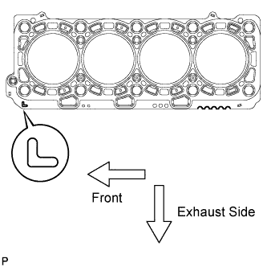 |
Remove any oil from the contact surface.
Place the cylinder head gasket on the cylinder block surface with the front face of the indicated mark "L" upward and facing the exhaust side.
| 3. INSTALL CYLINDER HEAD SUB-ASSEMBLY LH |
Place the cylinder head on the cylinder head gasket.
Inspect the cylinder head bolts (Click here).
Apply a light coat of engine oil to the threads and under the heads of the cylinder head bolts.
Step 1:
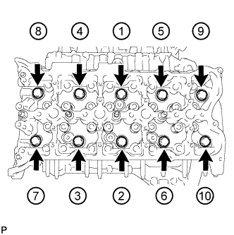 |
Install and uniformly tighten the 10 cylinder head bolts with the spacers in several steps, in the sequence shown in the illustration.
 |
Step 2:
Mark the cylinder head bolt heads with paint as shown in the illustration.
Tighten the cylinder head bolts 90° in the sequence shown in step 1.
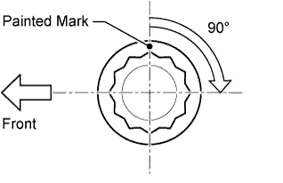 |
Step 3:
Tighten the cylinder head bolts another 90° in the sequence shown in step 1.
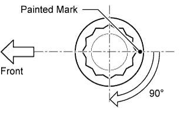 |
Step 4:
Tighten the cylinder head bolts by an additional 90° in the sequence shown in step 1.
Check that the painted marks are now facing the exhaust port side.
| 4. INSTALL NO. 2 VALVE LASH ADJUSTER ASSEMBLY |
 |
Install the 16 No. 2 valve lash adjusters to the cylinder head.
| 5. INSTALL NO. 2 VALVE ROCKER ARM |
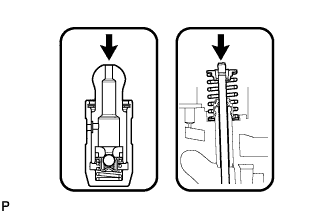 |
Apply engine oil to the lash adjuster tips and valve stem ends.
Install the 16 No. 2 valve rocker arms as shown in the illustration.
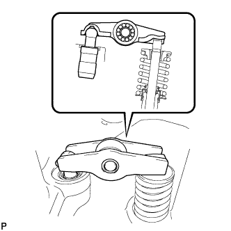 |
| 6. INSTALL NO. 5 CAMSHAFT BEARING CAP |
 |
Align the camshaft bearing cap and the ring pins of the cylinder head, and install the cap.
| 7. SELECT NO. 1 CYLINDER HEAD GASKET |
Set the 2 crankshaft pulley set bolts to the crankshaft.
Clean the cylinder block with solvent.
Inspect the protrusion for each cylinder.
Set the piston of the cylinder to be measured to slightly before TDC.
Place a dial indicator on the cylinder block, and set the measuring tip as shown in the illustration.
Set the dial indicator at 0 mm (0 in.).
Find where the piston head protrudes most by slowly turning the crankshaft clockwise and counterclockwise.
Measure the piston protrusion value of each cylinder at 2 places as shown in the illustration below, making a total of 8 measurements.
Select a new cylinder head gasket.
| Item | Cutout | Specified Condition* |
| A | 1 | 1.20 to 1.30 mm (0.0472 to 0.0512 in.) |
| B | 2 | 1.25 to 1.35 mm (0.0492 to 0.0394 in.) |
| C | 3 | 1.30 to 1.40 mm (0.0512 to 0.0551 in.) |
| D | 4 | 1.35 to 1.45 mm (0.0531 to 0.0571 in.) |
| E | 5 | 1.40 to 1.50 mm (0.0551 to 0.0591 in.) |
Select the largest piston protrusion value from the measurements and then select a new appropriate gasket according to the table below.
| Item | Specified Condition |
| A | 0.520 to 0.575 mm (0.0205 to 0.0226 in.) |
| B | 0.575 to 0.625 mm (0.0226 to 0.0246 in.) |
| C | 0.625 to 0.675 mm (0.0246 to 0.0266 in.) |
| D | 0.675 to 0.725 mm (0.0266 to 0.0285 in.) |
| E | 0.725 to 0.780 mm (0.0285 to 0.0307 in.) |
| 8. INSTALL NO. 1 CYLINDER HEAD GASKET |
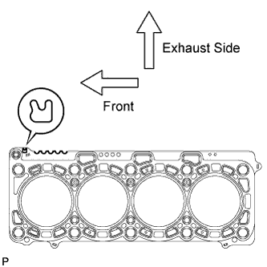 |
Remove any oil from the contact surface.
Place the cylinder head gasket on the cylinder block surface with the front face of the indicated mark "R" upward and facing the exhaust side.
| 9. INSTALL CYLINDER HEAD SUB-ASSEMBLY RH |
Place the cylinder head on the cylinder head gasket.
Inspect the cylinder head bolts (Click here).
Apply a light coat of engine oil to the threads and under the heads of the cylinder head bolts.
Step 1:
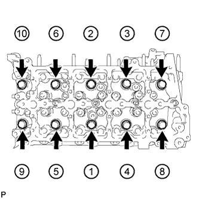 |
Install and uniformly tighten the 10 cylinder head bolts with the spacers in several steps, in the sequence shown in the illustration.
|
Step 2:
Mark the cylinder head bolt heads with paint as shown in the illustration.
Tighten the cylinder head bolts 90° in the sequence shown in step 1.
Step 3:
Tighten the cylinder head bolts another 90° in the sequence shown in step 1.
Step 4:
Tighten the cylinder head bolts by an additional 90° in the sequence shown in step 1.
Check that the painted marks are now facing the intake port side.
| 10. INSTALL NO. 1 VALVE LASH ADJUSTER ASSEMBLY |
 |
Install the 16 No. 1 valve lash adjusters to the cylinder head.
| 11. INSTALL NO. 1 VALVE ROCKER ARM |
Apply engine oil to the lash adjuster tips and valve stem ends.
Install the 16 No. 1 valve rocker arms as shown in the illustration.
| 12. INSTALL NO. 2 CAMSHAFT BEARING CAP |
 |
Align the camshaft bearing cap and the ring pins of the cylinder head, and install the cap.
| 13. SET NO. 1 CYLINDER TO 45° BEFORE TDC |
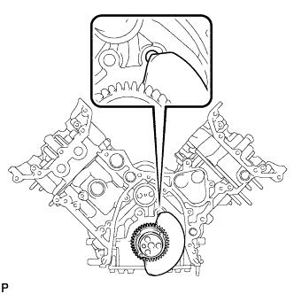 |
Turn the crankshaft counterclockwise until the No. 1 cylinder is at a position 45° before TDC.
| 14. INSTALL NO. 1 AND NO. 2 CAMSHAFTS |
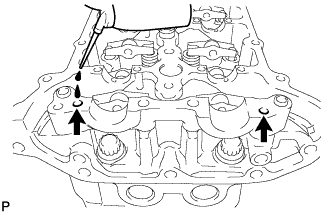 |
Add more than 19 cc (1.16 cu. in.) of engine oil into the cylinder head side oil holes.
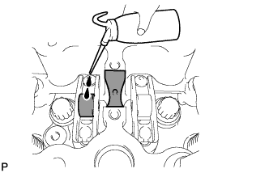 |
Apply engine oil to the rollers of the valve rocker arms and camshaft housing of the cylinder head.
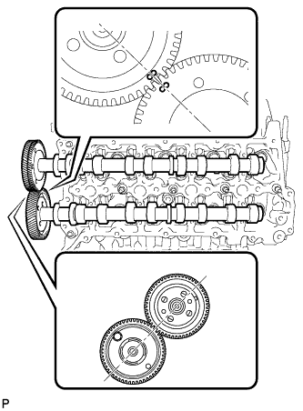 |
Install the camshafts.
Apply engine oil to the camshaft journals, lobes, thrust portion and gears.
Align the timing marks (2 dot marks) on the back side of the No. 1 and No. 2 camshaft timing gears as shown in the illustration.
Place the camshafts into the cylinder head.
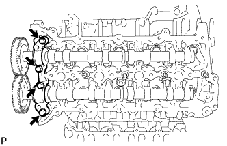 |
Install the No. 1 camshaft bearing cap.
Align the No. 1 camshaft bearing cap and the ring pins of the No. 2 camshaft bearing cap.
Temporarily install the 4 bolts by hand.
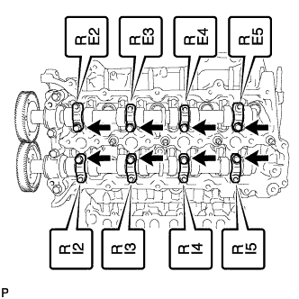 |
Install the No. 3 camshaft bearing caps.
Confirm the marks and numbers on the camshaft bearing caps and place them in their proper position and direction.
Temporarily install the 8 bolts, which are not installed with the oil feed pipe, by hand.
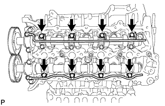 |
Temporarily install the No. 1 and No. 2 camshaft oil feed pipes with the 8 bolts by hand.
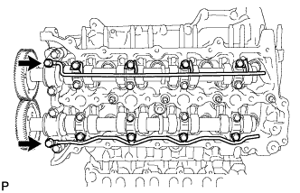 |
Temporarily install the 2 union bolts by hand.
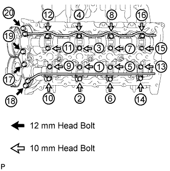 |
Uniformly tighten the 20 bolts in several steps in the order shown in the illustration.
Tighten the 2 union bolts.
 |
Remove the service bolt from the No. 1 camshaft timing gear.
| 15. INSTALL NO. 3 AND NO. 4 CAMSHAFTS |
Add more than 19 cc (1.16 cu. in.) of engine oil into the cylinder head side oil holes.
Apply engine oil to the rollers of the valve rocker arms and camshaft housing of the cylinder head.
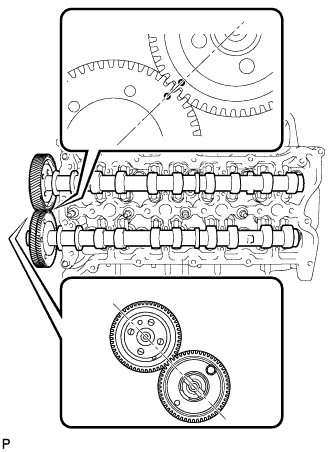 |
Install the camshafts.
Apply engine oil to the camshaft journals, lobes, trust portion and gears.
Align the timing marks (1 dot mark) on the back side of the No. 3 and No. 4 camshaft timing gears as shown in the illustration.
Place the camshafts into the cylinder head.
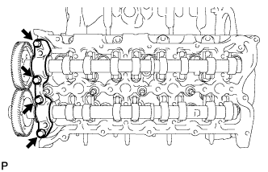 |
Install the No. 4 camshaft bearing cap.
Align the No. 4 camshaft bearing cap and the ring pins of the No. 5 camshaft bearing cap.
Temporarily install the 4 bolts by hand.
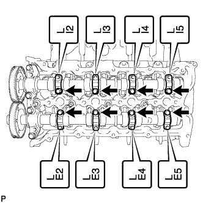 |
Install the No. 3 camshaft bearing caps.
Confirm the marks and numbers on the camshaft bearing caps and place them in their proper position and direction.
Temporarily install the 8 bolts, which are not installed with the oil feed pipe, by hand.
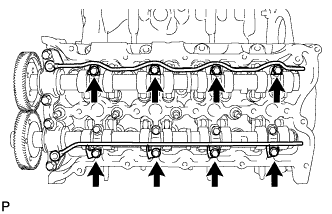 |
Temporarily install the No. 3 and No. 4 camshaft oil feed pipes with the 8 bolts by hand.
 |
Temporarily install the 2 union bolts by hand.
Uniformly tighten the 20 bolts in several steps in the order shown in the illustration.
|
Tighten the 2 union bolts.
|
Remove the service bolt from the No. 4 camshaft timing gear.
| 16. INSTALL NO. 2 TIMING GEAR CASE INSULATOR |
 |
Install the No. 2 timing gear case insulator.
| 17. INSTALL NO. 2 VACUUM TRANSMITTING PIPE SUB-ASSEMBLY |
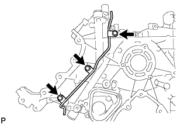 |
Install the No. 2 vacuum transmitting pipe with the 3 bolts.
| 18. INSTALL NO. 1 VACUUM TRANSMITTING PIPE SUB-ASSEMBLY |
 |
Install the No. 1 vacuum transmitting pipe with the 2 bolts.
| 19. CONNECT NO. 3 VACUUM TRANSMITTING HOSE |
 |
| 20. CONNECT NO. 2 VACUUM TRANSMITTING HOSE |
 |
| 21. INSTALL TIMING GEAR CASE SUB-ASSEMBLY |
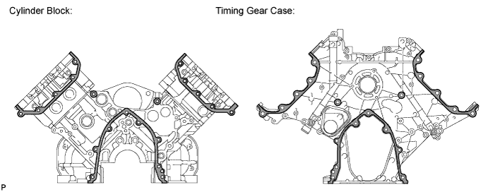
Apply seal packing to the timing gear case as shown in the following illustration.
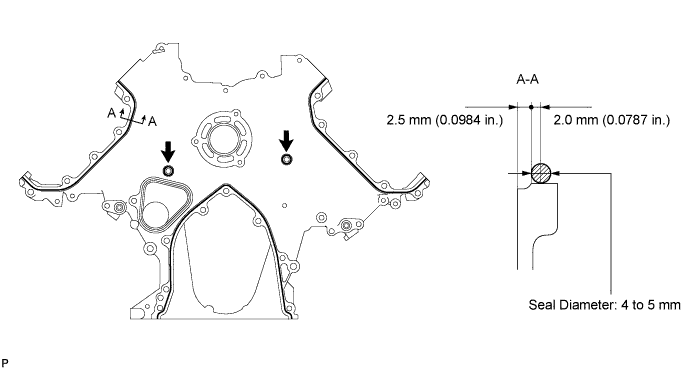
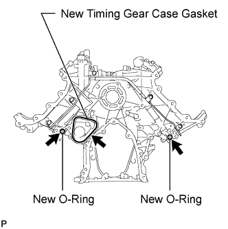 |
Install a new timing gear case gasket.
Apply engine oil to 2 new O-rings and install them to the timing gear case.
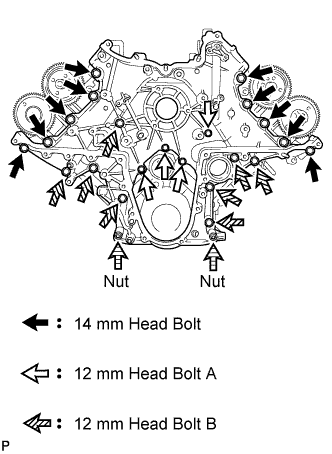 |
Install the timing gear case with the 22 bolts and 2 nuts.
| Item | Quantity | Length |
| A | 4 | 20 mm (0.787 in.) |
| B | 8 | 45 mm (1.77 in.) |
| 22. INSTALL V-BANK SILENCER |
 |
Align the alignment areas of the V-bank silencer and cylinder block, and install the V-bank silencer.
| 23. INSTALL FUEL SUPPLY PUMP ASSEMBLY |
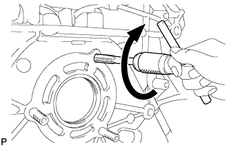 |
Using an 8 mm x 1.25 pitch tap, remove the adhesive from the timing gear case side bolt hole.
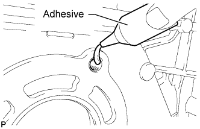 |
Apply adhesive to 2 or more threads of the timing gear case bolt hole.
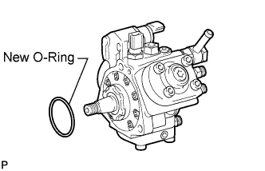 |
Apply engine oil to a new O-ring and install it to the supply pump.
 |
Install the supply pump to the timing gear case.
Temporarily install the 2 nuts.
Using a 6 mm hexagon wrench, install the hexagon bolt and then tighten the 2 nuts.
| 24. INSTALL STRAIGHT PIN |
 |
Install the straight pin.
| 25. ASSEMBLE FUEL SUPPLY PUMP DRIVE GEAR AND FUEL SUPPLY PUMP SHAFT SPROCKET |
Align the fuel supply pump drive gear to the fuel supply pump shaft sprocket straight pin and temporarily install it with the 4 bolts.
 |
Hold the fuel supply pump shaft sprocket in a vise between aluminum plates.
Tighten the 4 bolts.
| 26. INSTALL RADIAL BALL BEARING |
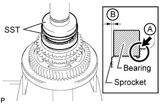 |
Using SST and a press, press in the radial ball bearing to the fuel supply pump shaft sprocket.
| 27. TEMPORARILY INSTALL FUEL SUPPLY PUMP DRIVE GEAR |
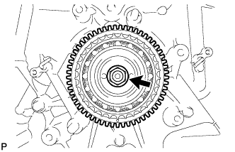 |
Align the cutout of the supply pump drive gear and key of the supply pump, and temporarily install the nut.
| 28. SET NO. 1 AND NO. 2 CAMSHAFTS TO TDC |
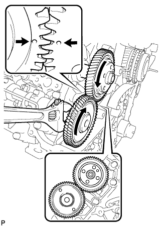 |
Using a wrench, turn the No. 1 camshaft and align the timing marks (1 dot mark) on the back side of the timing gears as shown in the illustration.
| 29. INSTALL NO. 1 IDLE GEAR SHAFT |
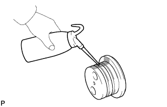 |
Apply engine oil to the contact surface of the idle gear shaft.
 |
Install the idle gear shaft to the cylinder block.
| 30. ASSEMBLE SUB GEAR, IDLE GEAR SPRING AND IDLE GEAR |
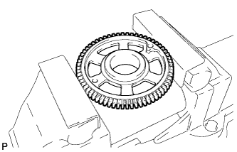 |
Hold the idle gear in a vise between aluminum plates.
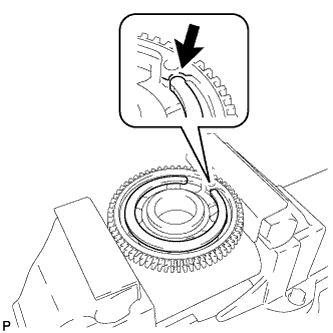 |
Align the right end of the idle gear spring to the notch of the idle gear and set it to the gear.
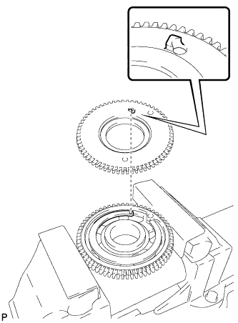 |
Install the sub idle gear.
Align the notch of the sub idle gear protrusion with the left end of the idle gear spring and install the sub idle gear to the idle gear.
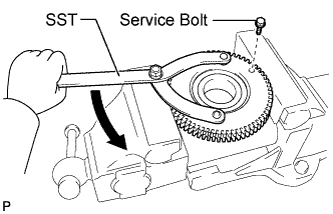 |
Using SST, turn the sub idle gear counterclockwise, and install an 8 mm x 1.25 pitch bolt with a length of 15 mm or more to the service hole.
| 31. INSTALL IDLE GEAR ASSEMBLY |
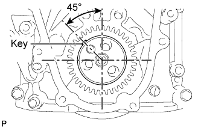 |
Temporarily install the 2 crankshaft pulley set bolts to the crankshaft.
Using a bar, turn the crankshaft clockwise to the No. 1 cylinder TDC position.
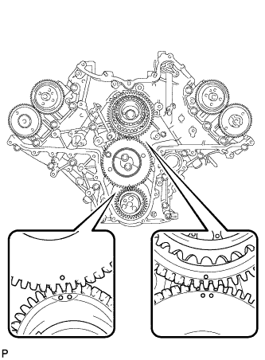 |
Align the timing marks of the supply pump drive gear and idle gear, and the timing marks of the crankshaft timing gear and idle gear as shown in the illustration.
Apply engine oil to the idle gear thrust plate and gears.
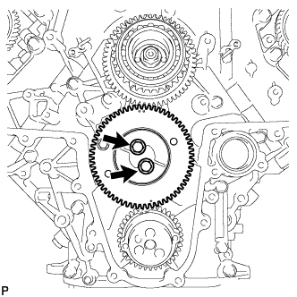 |
Install the idle gear thrust plate with the 2 bolts.
 |
Remove the service bolt.
| 32. TIGHTEN FUEL SUPPLY PUMP DRIVE GEAR NUT |
 |
Using SST, hold the idle gear and tighten the nut.
| 33. CHECK NO. 1 CYLINDER TO TDC/COMPRESSION |
Check that the timing marks of the following pairs of parts are aligned: 1) supply pump drive gear and idle gear: 2) crankshaft timing gear and idle gear: 3) RH and LH camshaft timing gears.
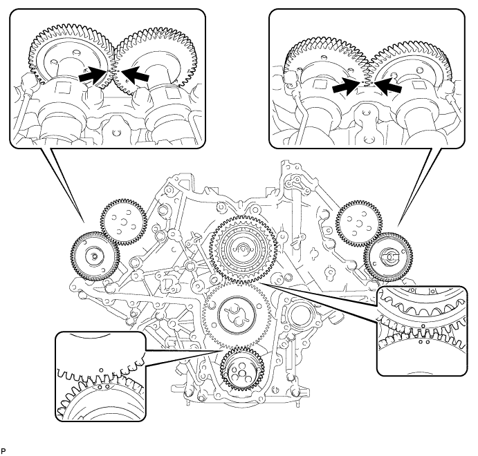
| 34. INSTALL NO. 2 CAMSHAFT TIMING SPROCKET AND NO. 2 TIMING CHAIN |
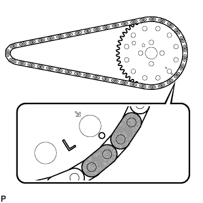 |
Align the 2 mark plates (yellow) on the No. 2 timing chain with the timing mark (1 dot mark) of the No. 2 camshaft timing sprocket as shown in the illustration.
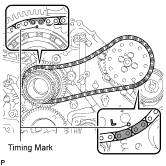 |
Align the No. 2 timing chain mark plate (yellow) with the supply pump drive gear timing mark, and temporarily install the No. 2 camshaft timing sprocket with the 4 bolts.
 |
Using SST, hold the No. 2 camshaft timing sprocket, and tighten the 4 bolts.
| 35. INSTALL NO. 1 CAMSHAFT TIMING SPROCKET AND NO. 1 TIMING CHAIN |
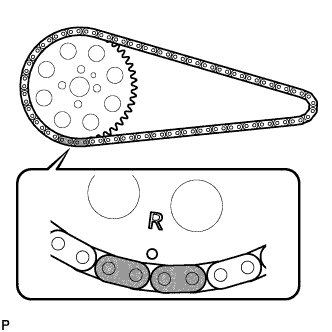 |
Align the 2 mark plates (yellow) on the No. 1 timing chain with the timing mark (1 dot mark) of the No. 1 camshaft timing sprocket as shown in the illustration.
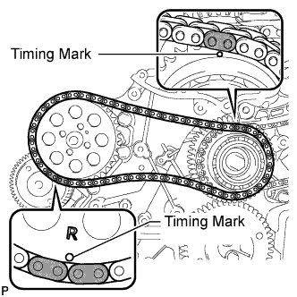 |
Align the No. 1 timing chain mark plate (yellow) with the supply pump drive gear timing mark, and temporarily install the No. 1 camshaft timing sprocket.
| 36. INSTALL PUMP DRIVE SHAFT GEAR |
 |
Temporarily install the pump drive shaft gear with the 4 bolts.
Using SST, hold the pump drive shaft gear and tighten the 4 bolts.
| 37. INSTALL NO. 2 CHAIN VIBRATION DAMPER |
 |
Install the No. 2 chain vibration damper with the 2 bolts.
| 38. INSTALL NO. 2 CHAIN TENSIONER SLIPPER |
 |
| 39. INSTALL NO. 2 CHAIN TENSIONER ASSEMBLY |
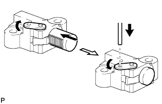 |
Move the stopper plate clockwise to release the lock, and push the plunger into the tensioner.
Move the stopper plate counterclockwise to set the lock, and insert a hexagon wrench into the stopper plate hole.
 |
Install the No. 2 chain tensioner with the 2 bolts.
Remove the hexagon wrench.
| 40. INSTALL NO. 1 CHAIN VIBRATION DAMPER |
 |
Install the No. 1 chain vibration damper with the 2 bolts.
| 41. INSTALL NO. 1 CHAIN TENSIONER SLIPPER |
 |
| 42. INSTALL NO. 1 CHAIN TENSIONER ASSEMBLY |
Move the stopper plate clockwise to release the lock, and push the plunger into the tensioner.
Move the stopper plate counterclockwise to set the lock, and insert a hexagon wrench into the stopper plate hole.
 |
Install the No. 1 chain tensioner with the 2 bolts.
Remove the hexagon wrench.
| 43. INSTALL NO. 1 CRANKSHAFT POSITION SENSOR PLATE |
Remove the adhesive from the threads of the 2 screws and the bolt holes of the crankshaft.
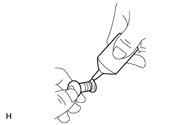 |
Apply adhesive to 2 or 3 threads of the 2 screws.
 |
Using a T30 "TORX" wrench, install the No. 1 crankshaft position sensor plate with the 2 screws.
| 44. CHECK NO. 1 CYLINDER TO TDC/COMPRESSION |
Temporarily install the 2 crankshaft pulley set bolts to the crankshaft.
Rotate the crankshaft 2 revolutions or more so that the crankshaft key is 45° counterclockwise from the top. Check that the timing marks (1 dot mark each) of the RH and LH camshaft timing gears align. If not as specified, turn the crankshaft 1 revolution (360°) and align the timing marks. If the timing marks are deviated, reinstall the chain and camshaft.

| 45. INSTALL FRONT CRANKSHAFT OIL SEAL |
Place the timing chain cover on wooden blocks.
Using SST and a hammer, tap in a new oil seal as shown in the illustration.
| 46. INSTALL TIMING CHAIN COVER SUB-ASSEMBLY |
Install a new O-ring to the timing gear case.
Apply seal packing to the timing chain cover as shown in the following illustration.
Apply engine oil to the lip of the oil seal.
Align and install the timing chain cover to the timing gear case knock pin and supply pump bearing.
If the stud bolts are loose, tighten them using an E7 "TORX" wrench.
Install and uniformly tighten the 16 bolts and 4 nuts in the order shown in the illustration.
| 47. INSTALL TIMING CHAIN COVER PLATE |
 |
Install a new gasket and the timing chain cover plate with the 4 bolts.
| 48. INSTALL WATER PUMP ASSEMBLY |
Temporarily install a new gasket and the water pump with the 9 bolts and 2 nuts.
| Item | Length |
| Bolt A | 30 mm (1.18 in.) |
| Bolt B | 80 mm (3.15 in.) |
Uniformly tighten the 9 bolts and 2 nuts of the water pump in the order shown in the illustration.
| 49. TEMPORARILY INSTALL INTAKE MANIFOLD |
Install the gasket and temporarily install the No. 2 intake manifold with the 9 bolts.
Install the gasket and temporarily install the No. 1 intake manifold with the 9 bolts.
Install the 2 gaskets and temporarily install the No. 3 intake manifold with the 16 bolts.
| Item | Length |
| Bolt A | 70 mm (2.76 in.) |
| Bolt B | 25 mm (0.984 in.) |
| 50. INSTALL FUEL INJECTOR LH |
Install 4 new injection nozzle seats to the cylinder head.
Apply a light amount of clean engine oil to 4 new O-rings.
Install an O-ring to each injector as shown in the illustration.
Insert the 4 injectors into the cylinder head.
For an injector that has been replaced with a new injector, register the new injector compensation code.
Temporarily install 4 new washers and the 4 nozzle clamps with the 4 clamp bolts.
Temporarily install the common rail LH with the 2 bolts.
Temporarily install the 4 injector pipes to the common rail and injectors.
Check the nozzle leakage pipe. Check that there are no scratches or dents on the 5 union seal surfaces. If scratches or dents are present, replace the nozzle leakage pipe.
Set the leakage pipe and 5 new gaskets in place.
Temporarily install the leakage pipe with the 4 hollow screws and union bolt.
 |
Tighten the 4 holder clamp bolts.
Remove the 4 injection pipes.
Remove the 2 bolts and common rail LH.
Tighten the 4 hollow screws.
Tighten the union bolt.
| 51. INSTALL FUEL INJECTOR RH |
Install 4 new injection nozzle seats to the cylinder head.
Apply a light amount of clean engine oil to 4 new O-rings.
Install an O-ring to each injector as shown in the illustration.
Insert the 4 injectors into the cylinder head.
For an injector that has been replaced with a new injector, register the injector compensation code.
Temporarily install 4 new washers and the 4 nozzle clamps with the 4 clamp bolts.
Temporarily install the common rail RH with the 2 bolts.
Temporarily install the 4 injector pipes to the common rail and injectors.
Check the nozzle leakage pipe. Check that there are no scratches or dents on the 5 union seal surfaces. If scratches or dents are present, replace the nozzle leakage pipe.
Set the leakage pipe and 5 new gaskets in place.
Temporarily install the leakage pipe with the 4 hollow screws and union bolt.
 |
Tighten the 4 holder clamp bolts.
Remove the 4 injection pipes.
Remove the 2 bolts and common rail RH.
Tighten the 4 hollow screws.
Tighten the union bolt.
| 52. REMOVE INTAKE MANIFOLD |
Remove the 16 bolts, 2 gaskets and intake manifold.
Remove the 9 bolts, No. 1 intake manifold and gasket.
Remove the 9 bolts, No. 2 intake manifold and gasket.
| 53. INSTALL NOZZLE HOLDER GASKET LH |
Press 4 new nozzle holder gaskets into the cylinder head cover LH.
| 54. INSTALL CYLINDER HEAD COVER SUB-ASSEMBLY LH |
Apply seal packing as shown in the illustration.
Install a new gasket to the cylinder head cover.
Temporarily install the cylinder head cover with the 17 bolts. Tighten the 17 bolts in the order shown in the illustration.
| 55. INSTALL NOZZLE HOLDER SEAL LH |
Press 4 new holder seals into the cylinder head cover LH.
| 56. INSTALL OIL SEPARATOR ASSEMBLY |
 |
Install a new gasket to the oil separator.
Install the oil separator with the 3 bolts.
| 57. INSTALL NOZZLE HOLDER GASKET RH |
Press 4 new nozzle holder gaskets into the cylinder head cover RH.
| 58. INSTALL CYLINDER HEAD COVER SUB-ASSEMBLY RH |
Apply seal packing as shown in the illustration.
Install a new gasket to the cylinder head cover.
Temporarily install the cylinder head cover with the 18 bolts. Tighten the 18 bolts in the order shown in the illustration.
| 59. INSTALL NOZZLE HOLDER SEAL RH |
Press 4 new holder seals into the cylinder head cover RH.
| 60. INSTALL OIL FILLER CAP GASKET |
| 61. INSTALL OIL FILLER CAP SUB-ASSEMBLY |
 |
| 62. INSTALL SCAVENGING PUMP ASSEMBLY |
 |
Install the scavenging pump with the 4 bolts.
| 63. INSTALL OIL PUMP ASSEMBLY |
 |
Install the oil pump with the 4 bolts.
| 64. INSTALL REAR CRANKSHAFT OIL SEAL |
 |
Place the oil seal retainer on wooden blocks.
Using SST and a hammer, tap in a new oil seal as shown in the illustration.
| 65. INSTALL REAR ENGINE OIL SEAL RETAINER |
 |
Apply seal packing in a continuous line as shown in the illustration.
Apply engine oil to the lip of a new oil seal.
 |
Install and uniformly tighten the 10 bolts in the order shown in the illustration.
| 66. INSTALL OIL REGULATOR ASSEMBLY |
 |
Install the oil regulator with the 4 bolts.
| 67. INSTALL INLET OIL PUMP PIPE |
 |
Apply a light coat of engine oil to a new O-ring, and install it to the inlet oil pump pipe.
Install the inlet oil pump pipe with the 3 bolts.
| 68. INSTALL NO. 1 OIL PAN BAFFLE PLATE |
 |
Install the No. 1 oil pan baffle plate with the 5 bolts.
| 69. INSTALL NO. 1 OIL PAN SUB-ASSEMBLY |
 |
Install the cylinder block oil hole gasket.
 |
Apply a light coat of engine oil to 3 new O-rings and set the 3 O-rings to the oil regulator and scavenging pump.
 |
Apply seal packing to the No. 1 oil pan as shown in the illustration.
 |
Install the No. 1 oil pan and oil reflector plate with the 20 bolts and 2 nuts.
| Item | Quantity | Length |
| Bolt A | 7 | 70 mm (2.76 in.) |
| Bolt B | 8 | 20 mm (0.787 in.) |
| Bolt C | 5 | 30 mm (1.18 in.) |
| 70. INSTALL OIL STRAINER SUB-ASSEMBLY |
 |
Apply a light coat of engine oil to a new O-ring, and install it to the oil strainer.
Install the oil strainer with the 2 bolts.
| 71. INSTALL NO. 2 OIL PAN SUB-ASSEMBLY |
 |
Apply seal packing to the No. 2 oil pan as shown in the illustration.
 |
Install the No. 2 oil pan with the 10 bolts and 2 nuts.
| 72. INSTALL OIL PAN DRAIN PLUG |
 |
Install a new gasket and the oil pan drain plug.
| 73. INSTALL ENGINE OIL LEVEL SENSOR |
 |
Install a new gasket and the engine oil level sensor with the 4 bolts.
| 74. INSTALL OIL FILTER BRACKET SUB-ASSEMBLY |
 |
Apply a light coat of engine oil to 2 new O-rings, and set them to the oil filter bracket.
 |
Install the oil filter bracket with the 3 bolts and 2 nuts.
| 75. INSTALL OIL FILTER ELEMENT |
 |
Clean the inside of the oil filter cap, its threads and its O-ring groove.
Apply a small amount of engine oil to a new O-ring and install it to the oil filter cap.
Set a new oil filter element in the oil filter cap.
Remove any dirt or foreign matter from the installation surface of the engine.
Apply a small amount of engine oil to the O-ring again and temporarily install the oil filter cap.
 |
Using SST, tighten the oil filter cap.
 |
Install the No. 2 engine under cover seal to the No. 2 engine under cover with the 2 bolts.
| 76. INSTALL OIL COOLER RELIEF VALVE ASSEMBLY |
 |
Install a new gasket and the oil cooler relief valve.
| 77. INSTALL OIL COOLER ASSEMBLY |
Apply a light coat of engine oil to 2 new O-rings and a new oil cooler gasket, and install them to the oil cooler.
 |
Install the oil cooler with the 2 bolts and 2 nuts.
| 78. INSTALL OIL PRESSURE SENDER GAUGE ASSEMBLY |
Remove the adhesive from the oil pressure sender gauge and the bolt hole f the oil filter bracket.
Apply adhesive to 2 or 3 threads of the oil pressure sender gauge.
 |
Install the oil pressure sender gauge.
| 79. INSTALL TIMING GEAR COVER SPACER |
 |
Install the timing gear cover spacer with the 2 bolts.
| 80. INSTALL CRANKSHAFT PULLEY |
 |
Align the crankshaft pulley and the crankshaft knock pin, and temporarily install the crankshaft pulley with the 3 bolts.
Install the 2 bolts to the bolt holes of the crankshaft rear side.
Using a bar, turn the crankshaft until the crankshaft pulley service hole is a little to the right of bottom dead center.
Install a 14 mm x 1.5 pitch service bolt with a length of 70 mm or more to the crankshaft pulley service hole, and hold the crankshaft using the timing chain cover protrusion.
 |
Uniformly tighten the 3 bolts in 2 passes in the order shown in the illustration.
Remove the service bolt.
| 81. CONNECT NO. 2 OIL COOLER HOSE |
 |
Align the white paint marks on the oil cooler hose and oil filter bracket and connect the hose. Then connect the other side to the water pump and attach the oil cooler hose to the clamp.
| 82. CONNECT NO. 1 OIL COOLER HOSE |
Face the pink paint mark on the oil cooler hose toward the front side of the engine and connect the hose to the oil filter bracket. Then connect the other side to the water pump.
| 83. INSTALL CRANKSHAFT POSITION SENSOR |
Apply a light coat of engine oil to the O-ring.
 |
Install the sensor with the bolt.
Connect the wire harness to the clamp.
| 84. INSTALL CAMSHAFT POSITION SENSOR |
 |
Apply a light coat of engine oil to the O-ring.
 |
Install the sensor with the bolt.